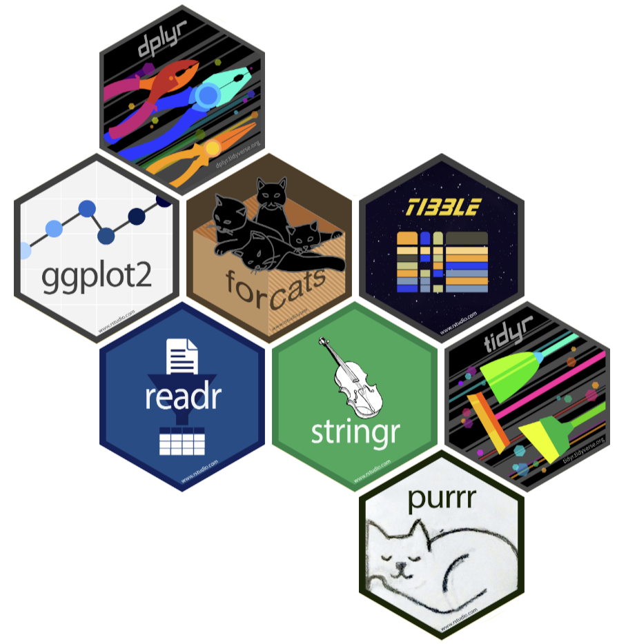
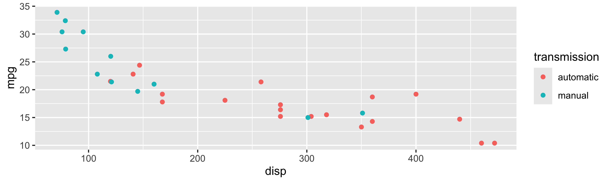
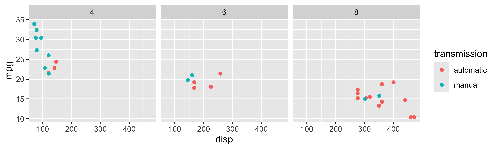
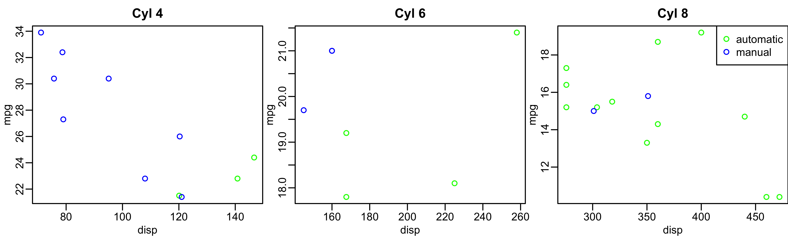

Lesson 2: Data and File Management
Adapted from parts of Mine Çetinkaya-Rundel’s tidyverse course
2026-01-07
What we will cover today
- Introduction to
tidyverse ggplot2revisited- Functions for data management
- Functions for data summarization
- Folder organization
herepackage and importing data
- Not covered: basic Quarto set up. Please see R recordings in OneDrive and my EPI 525 site for videos and slides.
![A cartoon of a fuzzy round monster face showing 10 different emotions experienced during the process of debugging code. The progression goes from (1) “I got this” - looking determined and optimistic; (2) “Huh. Really thought that was it.” - looking a bit baffled; (3) “...” - looking up at the ceiling in thought; (4) “Fine. Restarting.” - looking a bit annoyed; (5) “OH WTF.” Looking very frazzled and frustrated; (6) “Zombie meltdown.” - looking like a full meltdown; (7) (blank) - sleeping; (8) “A NEW HOPE!” - a happy looking monster with a lightbulb above; (9) “insert awesome theme song” - looking determined and typing away; (10) “I love coding” - arms raised in victory with a big smile, with confetti falling.](../img_slides/debugging.png)
Artwork by @allison_horst
What we will cover today
- Introduction to
tidyverse
ggplot2revisited- Functions for data management
- Functions for data summarization
- Folder organization
herepackage and importing data
What is the tidyverse?
The tidyverse is a collection of R packages designed for data science. All packages share an underlying design philosophy, grammar, and data structures.
- ggplot2 - data visualisation
- dplyr - data manipulation
- tidyr - tidy data
- readr - read rectangular data
- purrr - functional programming
- tibble - modern data frames
- stringr - string manipulation
- forcats - factors
- and many more …

Tidy data1

Each variable must have its own column.
Each observation must have its own row.
Each value must have its own cell.
Pipe operator (magrittr)
- The pipe operator (
%>%) allows us to step through sequential functions in the same way we follow if-then statements or steps from instructions
I want to find my keys, then start my car, then drive to work, then park my car.
Recoding a binary variable with pipe operator
Let’s say I want a variable transmission to show the category names that are assigned to numeric values in the code. I want 0 to be coded as automatic and 1 to be coded as manual.
Reference: Recoding a multi-level variable
Let’s say I want a variable gear to show the category names that are assigned to numeric values in the code. I want 3 to be coded as gear three, 4 to be coded as gear four, 5 to be coded as gear five.
What we will cover today
- Introduction to
tidyverse
ggplot2revisited
- Functions for data management
- Functions for data summarization
- Folder organization
herepackage and importing data
ggplot2 in tidyverse

We talked about this in our review notes
- I want to revisit it: always helps to have more examples!
- This example is closer to the multivariable work we’ll do in this class!
- ggplot2 is tidyverse’s data visualization package
- The
ggin “ggplot2” stands for Grammar of Graphics
- It is inspired by the book Grammar of Graphics by Leland Wilkinson
Tidyverse: Visualizing multiple variables

Poll Everywhere Question 1
Tidyverse: Visualizing even more variables

Base R: Visualizing even more variables
mtcars$trans_color <- ifelse(mtcars$transmission == "automatic", "green", "blue")
mtcars_cyl4 = mtcars[mtcars$cyl == 4, ]
mtcars_cyl6 = mtcars[mtcars$cyl == 6, ]
mtcars_cyl8 = mtcars[mtcars$cyl == 8, ]
par(mfrow = c(1, 3), mar = c(2.5, 2.5, 2, 0), mgp = c(1.5, 0.5, 0))
plot(mpg ~ disp, data = mtcars_cyl4, col = trans_color, main = "Cyl 4")
plot(mpg ~ disp, data = mtcars_cyl6, col = trans_color, main = "Cyl 6")
plot(mpg ~ disp, data = mtcars_cyl8, col = trans_color, main = "Cyl 8")
legend("topright", legend = c("automatic", "manual"), pch = 1, col = c("green", "blue"))
What we will cover today
- Introduction to
tidyverse ggplot2revisited
- Functions for data management
- Functions for data summarization
- Folder organization
herepackage and importing data
Important functions for data management
Data manipulation
pivot_longer()andpivot_wider()(not covered today)rename()mutate()filter()select()
Summarizing data
tbl_summary()group_by()summarize()across()
Let’s look back at the dds.discr dataset that I briefly used last class
- We will load the data (This is a special case!
dds.discris a built-in R dataset)
- Now, let’s take a glimpse at the dataset:
Rows: 1,000
Columns: 6
$ id <int> 10210, 10409, 10486, 10538, 10568, 10690, 10711, 10778, 1…
$ age.cohort <fct> 13-17, 22-50, 0-5, 18-21, 13-17, 13-17, 13-17, 13-17, 13-…
$ age <int> 17, 37, 3, 19, 13, 15, 13, 17, 14, 13, 13, 14, 15, 17, 20…
$ gender <fct> Female, Male, Male, Female, Male, Female, Female, Male, F…
$ expenditures <int> 2113, 41924, 1454, 6400, 4412, 4566, 3915, 3873, 5021, 28…
$ ethnicity <fct> White not Hispanic, White not Hispanic, Hispanic, Hispani…Poll Everywhere Question 2
rename(): one of the first things I usually do
I notice that two variables have values that don’t necessarily match the variable name
Female and male are not genders
“White not Hispanic” combines race and ethnicity into one category
I want to rename gender to sex (not sure if assigned at birth?) and rename ethnicity to R_E (race and ethnicity)
Rows: 1,000
Columns: 6
$ id <int> 10210, 10409, 10486, 10538, 10568, 10690, 10711, 10778, 1…
$ age.cohort <fct> 13-17, 22-50, 0-5, 18-21, 13-17, 13-17, 13-17, 13-17, 13-…
$ age <int> 17, 37, 3, 19, 13, 15, 13, 17, 14, 13, 13, 14, 15, 17, 20…
$ sex <fct> Female, Male, Male, Female, Male, Female, Female, Male, F…
$ expenditures <int> 2113, 41924, 1454, 6400, 4412, 4566, 3915, 3873, 5021, 28…
$ R_E <fct> White not Hispanic, White not Hispanic, Hispanic, Hispani…mutate(): constructing new variables from what you have
We’ve seen a couple examples for
mutate()so far (mostly because its used so often!)We haven’t seen an example where we make a new variable from two variables
I want to make a variable that is the ratio of expenditures over age
Rows: 1,000
Columns: 7
$ id <int> 10210, 10409, 10486, 10538, 10568, 10690, 10711, 10778, 1…
$ age.cohort <fct> 13-17, 22-50, 0-5, 18-21, 13-17, 13-17, 13-17, 13-17, 13-…
$ age <int> 17, 37, 3, 19, 13, 15, 13, 17, 14, 13, 13, 14, 15, 17, 20…
$ sex <fct> Female, Male, Male, Female, Male, Female, Female, Male, F…
$ expenditures <int> 2113, 41924, 1454, 6400, 4412, 4566, 3915, 3873, 5021, 28…
$ R_E <fct> White not Hispanic, White not Hispanic, Hispanic, Hispani…
$ exp_to_age <dbl> 124.2941, 1133.0811, 484.6667, 336.8421, 339.3846, 304.40…mutate(): other examples
Rows: 1,000
Columns: 10
$ id <int> 10210, 10409, 10486, 10538, 10568, 10690, 10711, 1077…
$ age.cohort <fct> 13-17, 22-50, 0-5, 18-21, 13-17, 13-17, 13-17, 13-17,…
$ age <int> 17, 37, 3, 19, 13, 15, 13, 17, 14, 13, 13, 14, 15, 17…
$ sex <fct> Female, Male, Male, Female, Male, Female, Female, Mal…
$ expenditures <int> 2113, 41924, 1454, 6400, 4412, 4566, 3915, 3873, 5021…
$ R_E <fct> White not Hispanic, White not Hispanic, Hispanic, His…
$ expend_20perc <dbl> 422.6, 8384.8, 290.8, 1280.0, 882.4, 913.2, 783.0, 77…
$ expend_sq <dbl> 4464769, 1757621776, 2114116, 40960000, 19465744, 208…
$ expend_over_5000 <chr> "No", "Yes", "No", "Yes", "No", "No", "No", "No", "Ye…
$ expend_log <dbl> 7.655864, 10.643614, 7.282074, 8.764053, 8.392083, 8.…Poll Everywhere Question 3
filter(): keep rows that match a condition
- What if I want to subset the data frame? (keep certain rows of observations)
I want to look at the data for people who between 50 and 60 years old
Rows: 23
Columns: 7
$ id <int> 15970, 19412, 29506, 31658, 36123, 39287, 39672, 43455, 4…
$ age.cohort <fct> 51+, 51+, 51+, 51+, 51+, 51+, 51+, 51+, 51+, 51+, 51+, 51…
$ age <int> 51, 60, 56, 60, 59, 59, 54, 57, 52, 57, 55, 52, 59, 54, 5…
$ sex <fct> Female, Female, Female, Female, Male, Female, Female, Mal…
$ expenditures <int> 54267, 57702, 48215, 46873, 42739, 44734, 52833, 48363, 5…
$ R_E <fct> White not Hispanic, White not Hispanic, White not Hispani…
$ exp_to_age <dbl> 1064.0588, 961.7000, 860.9821, 781.2167, 724.3898, 758.20…select(): keep or drop columns using their names and types
- What if I want to remove or keep certain variables?
I want to only have age and expenditure in my data frame
What we will cover today
- Introduction to
tidyverse ggplot2revisited- Functions for data management
- Functions for data summarization
- Folder organization
herepackage and importing data
tbl_summary() : table summary (1/2)
- What if I want one of those fancy summary tables that are at the top of most research articles? (lovingly called “Table 1”)
| Characteristic | N = 1,0001 |
|---|---|
| id | 55,385 (31,759, 76,205) |
| age.cohort | |
| 0-5 | 82 (8.2%) |
| 6-12 | 175 (18%) |
| 13-17 | 212 (21%) |
| 18-21 | 199 (20%) |
| 22-50 | 226 (23%) |
| 51+ | 106 (11%) |
| age | 18 (12, 26) |
| sex | |
| Female | 503 (50%) |
| Male | 497 (50%) |
| expenditures | 7,026 (2,898, 37,718) |
| R_E | |
| American Indian | 4 (0.4%) |
| Asian | 129 (13%) |
| Black | 59 (5.9%) |
| Hispanic | 376 (38%) |
| Multi Race | 26 (2.6%) |
| Native Hawaiian | 3 (0.3%) |
| Other | 2 (0.2%) |
| White not Hispanic | 401 (40%) |
| exp_to_age | 462 (273, 938) |
| 1 Median (Q1, Q3); n (%) | |
tbl_summary() : table summary (2/2)
- Let’s make this more presentable
- Will need to do this on one of your labs!!
| Characteristic | N = 1,0001 |
|---|---|
| Age | 23 (18) |
| Sex | |
| Female | 503 (50%) |
| Male | 497 (50%) |
| Expenditures | 18,066 (19,543) |
| Race/Ethnicity | |
| American Indian | 4 (0.4%) |
| Asian | 129 (13%) |
| Black | 59 (5.9%) |
| Hispanic | 376 (38%) |
| Multi Race | 26 (2.6%) |
| Native Hawaiian | 3 (0.3%) |
| Other | 2 (0.2%) |
| White not Hispanic | 401 (40%) |
| 1 Mean (SD); n (%) | |
group_by(): group by one or more variables
- What if I want to quickly look at group differences?
- It will not change how the data look, but changes the actions of following functions
I want to group my data by sex.
Rows: 1,000
Columns: 7
Groups: sex [2]
$ id <int> 10210, 10409, 10486, 10538, 10568, 10690, 10711, 10778, 1…
$ age.cohort <fct> 13-17, 22-50, 0-5, 18-21, 13-17, 13-17, 13-17, 13-17, 13-…
$ age <int> 17, 37, 3, 19, 13, 15, 13, 17, 14, 13, 13, 14, 15, 17, 20…
$ sex <fct> Female, Male, Male, Female, Male, Female, Female, Male, F…
$ expenditures <int> 2113, 41924, 1454, 6400, 4412, 4566, 3915, 3873, 5021, 28…
$ R_E <fct> White not Hispanic, White not Hispanic, Hispanic, Hispani…
$ exp_to_age <dbl> 124.2941, 1133.0811, 484.6667, 336.8421, 339.3846, 304.40…- Let’s see how the groups change something like the
summarize()function in the next slide
summarize(): summarize your data or grouped data into one row
- What if I want to calculate specific descriptive statistics for my variables?
- This function is often best used with
group_by() - If only presenting the summaries, functions like
tbl_summary()is better summarize()creates a new data frame, which means you can plot and manipulate the summarized data
Over whole sample:
across(): apply a function across multiple columns
- Like
group_by(), this function is often paired with another transformation function
I want all my integer values to have two significant figures.
Rows: 1,000
Columns: 7
$ id <dbl> 10000, 10000, 10000, 11000, 11000, 11000, 11000, 11000, 1…
$ age.cohort <fct> 13-17, 22-50, 0-5, 18-21, 13-17, 13-17, 13-17, 13-17, 13-…
$ age <dbl> 17, 37, 3, 19, 13, 15, 13, 17, 14, 13, 13, 14, 15, 17, 20…
$ sex <fct> Female, Male, Male, Female, Male, Female, Female, Male, F…
$ expenditures <dbl> 2100, 42000, 1500, 6400, 4400, 4600, 3900, 3900, 5000, 29…
$ R_E <fct> White not Hispanic, White not Hispanic, Hispanic, Hispani…
$ exp_to_age <dbl> 124.2941, 1133.0811, 484.6667, 336.8421, 339.3846, 304.40…Poll Everywhere Question 4
What we will cover today
- Introduction to
tidyverse ggplot2revisited- Functions for data management
- Functions for data summarization
- Folder organization
herepackage and importing data
Folder organization
Make a folder for our class!
- I suggest naming it something like
BSTA_512_W25to indicate the class and the term
- I suggest naming it something like
Make these folders in your computer (or in OneDrive if you prefer)
- Only make them in OneDrive if you have a desktop connection
For a project, I have the following folders
- Background
- Code
- Data_Raw
- Data_Processed
- Dissemination
- Reports
- Meetings
For our class, I suggest making one folder for the course with the following folders in it:
- Data
- Homework
- Project (with above subfolders)
- Lessons
- And other folders if you want
Aside: folder and file naming
There are a few good practices for naming files and folders for easy tracking:
- Keep the name short and relevant
- Use leading numbers to help organize sequential items
- I can show you my lessons folders as an example
- Use dates in the format “YYYY-MM-DD” so that files are in chronological order
- You can label different versions if you would like to
- Use “_” to separate sections of the name
- I also use this to separate words, but some people say you should use “-” to separate words
Creating project in RStudio
Way to designate a working directory: basically your home base when working in R
We have to tell R exactly where we are in our folders and where to find other things
A project makes it easier to tell R where we are
Basic steps to create a project
Go into RStudio
Create new project for this class (under
Fileor top right corner)- I would chose “Existing Directory” since we have already set up our folders
- Make the new project in the
BSTA_512_W25folder
Once we have projects, we can open one and R will automatically know that its location is the start of our working directory
Only make one project for now!!
The nice thing about R projects
- 5 minute video explaining some of the nice features of R projects
Reproducibility
Research data and code can reach the same results regardless of who is running the code
- This can also refer to future or past you!
- We want to set up our work so the entire folder can be moved around and work in its new location
- Projects work well in combination with the
herepackage
What we will cover today
- Introduction to
tidyverse ggplot2revisited- Functions for data management
- Functions for data summarization
- Folder organization
herepackage and importing data
here package

Illustration by Allison Horst
here package
Good source for the
herepackage- Just substitute
.Rmdwith.qmd
- Just substitute
Basically, a
.qmdfile and.Rfile work differently- We haven’t worked much with
.Rfiles
- We haven’t worked much with
For
.qmdfiles, the automatic directory is the folder it is in- But we want it to be the main project folder
herecan help with that
- Very important for reproducibility!!

Poll Everywhere Question 5
Using here package
Within your console, type
here()and enter- Try this with
getwd()as well
- Try this with
[1] "/Users/wakim/Library/CloudStorage/OneDrive-OregonHealth&ScienceUniversity/Teaching/Classes/BSTA_512_26W/BSTA_512_26W_site"[1] "/Users/wakim/Library/CloudStorage/OneDrive-OregonHealth&ScienceUniversity/Teaching/Classes/BSTA_512_26W/BSTA_512_26W_site"
herecan be used whenever we need to access a file path in R code- Importing data
- Saving output
- Accessing files
Using here() to load data
The
here()function will start at the working directory (where your.Rprojfile is) and let you write out a file path for anythingTo load the dataset in our
.qmdfile, we will use:
Common functions to load data
| Function | Data file type | Package needed |
|---|---|---|
read_excel() |
.xls, .xlsx |
readxl |
read.csv() |
.csv |
Built in |
load() |
.Rdata |
Built in |
read_sas() |
.sas7bdat |
haven |
Resources
Data work resources
Additional details and examples are available in the vignettes:
and the dplyr 1.0.0 release blog posts:
R programming class at OHSU!
- You can check out Dr. Meike’s R class page if you want more notes, videos, etc.
- You can check out Dr. Jessica’s R class page from 2022 if you want more notes, videos, etc.
The larger tidy ecosystem
Just to name a few…
Credit to Mine Çetinkaya-Rundel
These notes were built from Mine’s notes
Most pages and code were left as she made them
I changed a few things to match our class
Please see her Github repository for the original notes
Lesson 2: Data Management